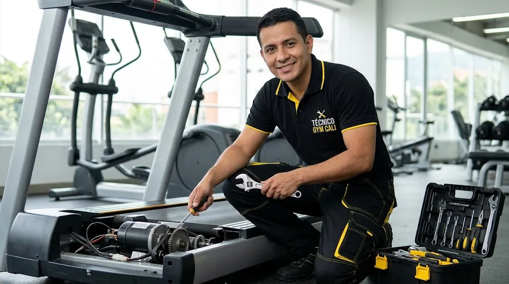
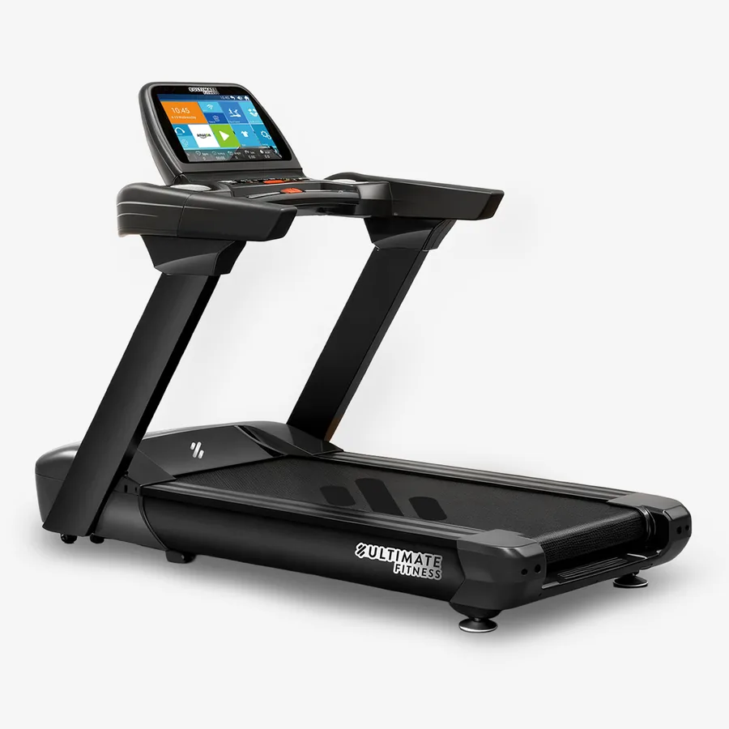
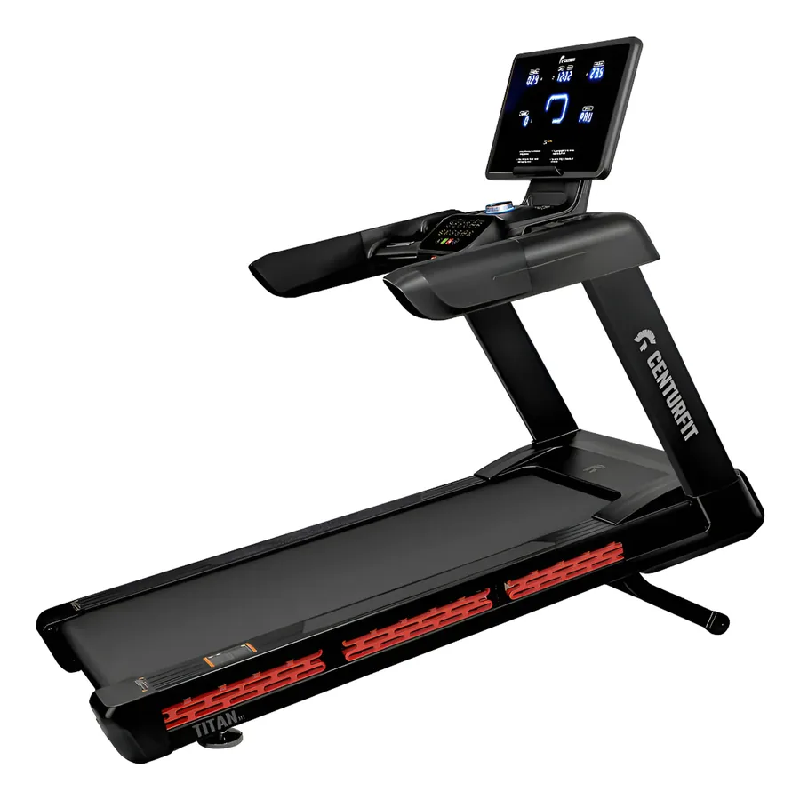

Imágenes de referencia.
Fallas de caminadoras que reparamos
- No enciende o la consola se queda sin pantalla: revisamos cable, interruptor, fusible o breaker del equipo, fuente y tarjeta controladora.
- La banda patina, se corre hacia un lado o salta: ajuste de tensión y alineación, desgaste de la banda de correr y de la correa del motor.
- Ruidos: golpeteo, chillido o zumbido que suele venir de rodillos, rodamientos, falta de lubricación o motor.
- Se apaga sola o pierde velocidad: sobrecalentamiento del motor, tarjeta, sensor de velocidad o sobrecarga.
- La inclinación no sube ni baja: motor de inclinación, calibración y cableado.
- Errores en la consola: diagnóstico del código y de la causa real, no solo reinicio del equipo.
- Mantenimiento general: limpieza interna, lubricación de la banda y revisión de tornillería.
Cómo trabajamos
- Nos escribes por WhatsApp con la marca, el modelo y qué le pasa a la caminadora. Una foto o un video corto del problema ayuda mucho.
- Te orientamos sobre la posible causa y coordinamos la revisión.
- Diagnosticamos el equipo y te explicamos la falla y el costo antes de empezar la reparación.
- Reparamos y probamos la caminadora con carga y a distintas velocidades.
¿Cuándo llamar al técnico y no seguir usándola?
Deja de usar la caminadora y escríbenos si huele a quemado, si ves chispas, si el motor suena forzado, si la banda está rota o desalineada o si se apaga con una persona encima. Seguir usándola puede dañar el motor o la tarjeta, y puede ser peligroso.
Antes de revisar cualquier equipo, desconéctalo de la corriente. No abras la tapa del motor ni toques la tarjeta electrónica si no tienes experiencia: aunque el equipo esté apagado, puede haber carga almacenada.
Caminadoras de casa y de gimnasio
Reparamos caminadoras de uso doméstico y equipos de gimnasios, condominios y empresas en Cali. Si tienes varios equipos, también puedes pedir un plan de mantenimiento para reducir paradas.
Tipos de caminadora y por qué importa para la reparación
Las caminadoras eléctricas mueven la banda con un motor y casi siempre tienen consola y, en muchos modelos, motor de inclinación. Las mecánicas o magnéticas no tienen motor: la banda se mueve con tu paso. Cada tipo falla de forma distinta, por eso la marca y el modelo son los datos más importantes al pedir una revisión.
En las eléctricas también influye la potencia del motor y si es de uso doméstico o comercial. Un motor doméstico que trabaja muchas horas al día se calienta y se desgasta antes, algo común cuando una caminadora de casa se usa en un gimnasio pequeño o por varias personas.
Cuidados entre una revisión y otra
- Limpia el polvo alrededor del motor y debajo de la banda con el equipo desconectado.
- No la uses con calzado que traiga arena o barro: se mete bajo la banda y desgasta rodillos y tabla.
- Ponla sobre una superficie nivelada y lejos de la humedad y el sol directo.
- Conéctala directo a la pared, sin extensiones.
- Revisa la tornillería de la estructura y la consola una vez al mes.
- Sigue las indicaciones de lubricación de tu manual.
Señales de desgaste que conviene atender pronto
- Bordes de la banda deshilachados o brillantes.
- Olor a plástico caliente al usarla.
- Vibración o ruido que antes no tenía.
- Velocidad irregular o consola que muestra errores de forma intermitente.
- La banda se corre cada vez más seguido.
Atender estas señales a tiempo suele ser más económico que esperar a que falle el motor o la tarjeta.
Preguntas frecuentes
¿Reparan caminadoras a domicilio en Cali?
Sí. Atendemos en Cali. Escríbenos por WhatsApp con la ubicación, la marca y la falla y coordinamos la visita.
¿Qué información debo enviar?
La marca y el modelo (suelen estar en una etiqueta o en la consola), qué falla presenta y, si puedes, una foto o un video corto.
¿Cuánto cuesta reparar una caminadora?
Depende de la falla y del equipo. Por eso primero la diagnosticamos y te informamos el costo antes de reparar. En la guía de costos explicamos qué lo hace subir o bajar.
¿Reparan caminadoras de gimnasio?
Sí, también atendemos gimnasios, condominios y empresas.